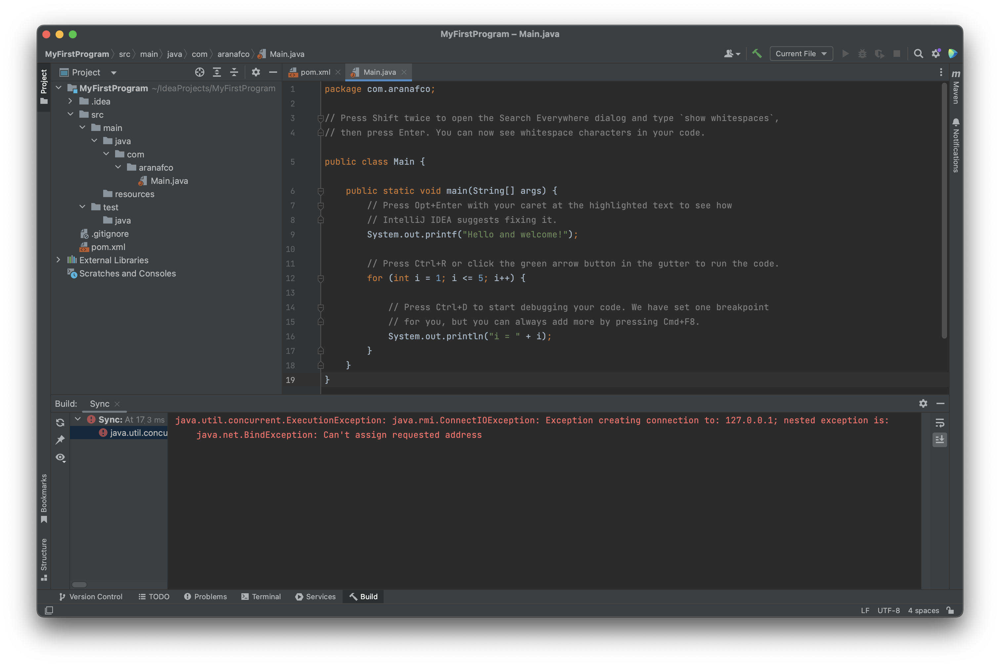
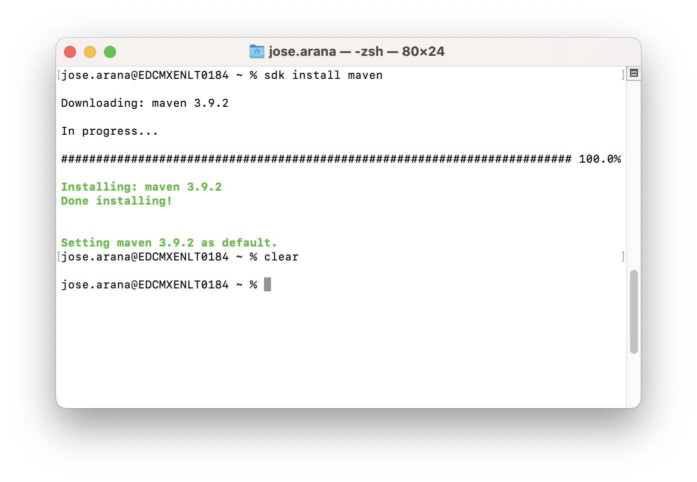
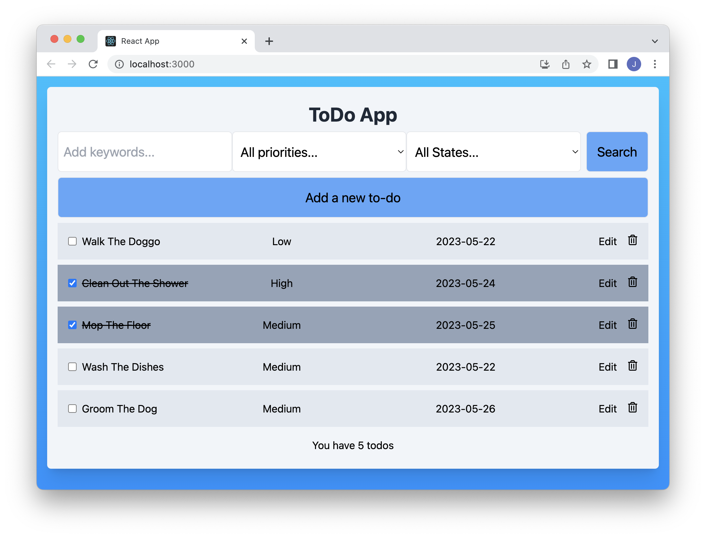
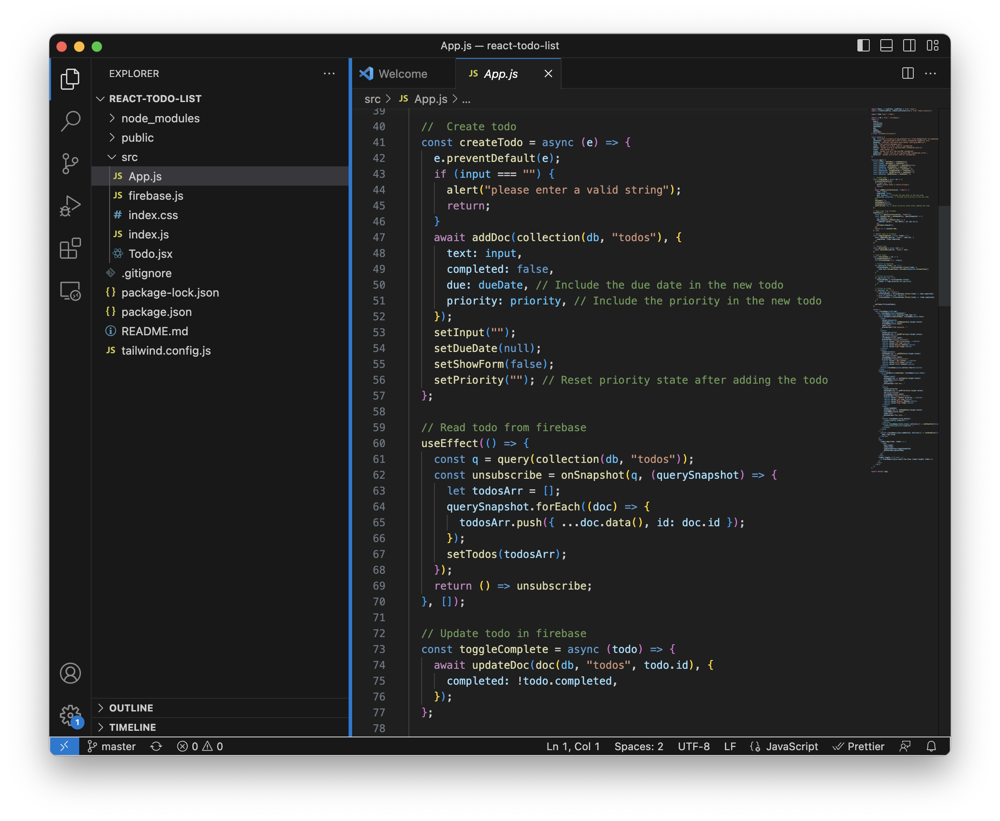

Week 05: To-do Application Part 1
(May 12- May 19) React Frontend Development
With Ledger CLI behind us it seemed like things couldn't get much harder, looking back on it one week later that seems like a very optimistic view. Being objective the premise is much simpler, To-do apps are very common beginner projects, in essence it should be much simpler than the accounting tool that is Ledger:
You are working with a client that needs to implement a to do list to help manage their tasks in their daily job. The client asked you to implement the following functionality:
Back End
The back end is proving to be the hardest to crack despite it only needing to handle a few requests. Personally I have no experience with Java, the language prescribed for the assignment, much less so with its related tools like Spring, Maven or Java Collections. To this we also have to add the technical issues caused by ZScaler, the company's VPN, for obvious security reasons it is particularly aggressive, which made it almost impossible to deploy locally for testing. Most of us had to resort to disabling during testing which is not an ideal solution.
It took essentially the whole week to get a CRUD server to run, as once we had solved the ZScaler issue we still had to deal with the fiddly Maven installation process, the breaking changes that Spring 3.0 introduced that rendered most online guides useless and in my case my own lack of familiarity with backend development.
Front End
The front end is where most of the functionality of the program is located, the specifications were that it had to be built using React, a javascript framework. I was already familiarized with react from previous projects, but still decided to use a tutorial for building the base of the project. Compared to the back end we advanced a great deal in the span of a couple of days, with most of the functionality implemented.
Due to being unable to get the back end running in a timely manner the app is currently running with a Firebase database, the functions that communicate with the database have been grouped together to make the change later to the local java backend
Uploaded on May 21, 2023